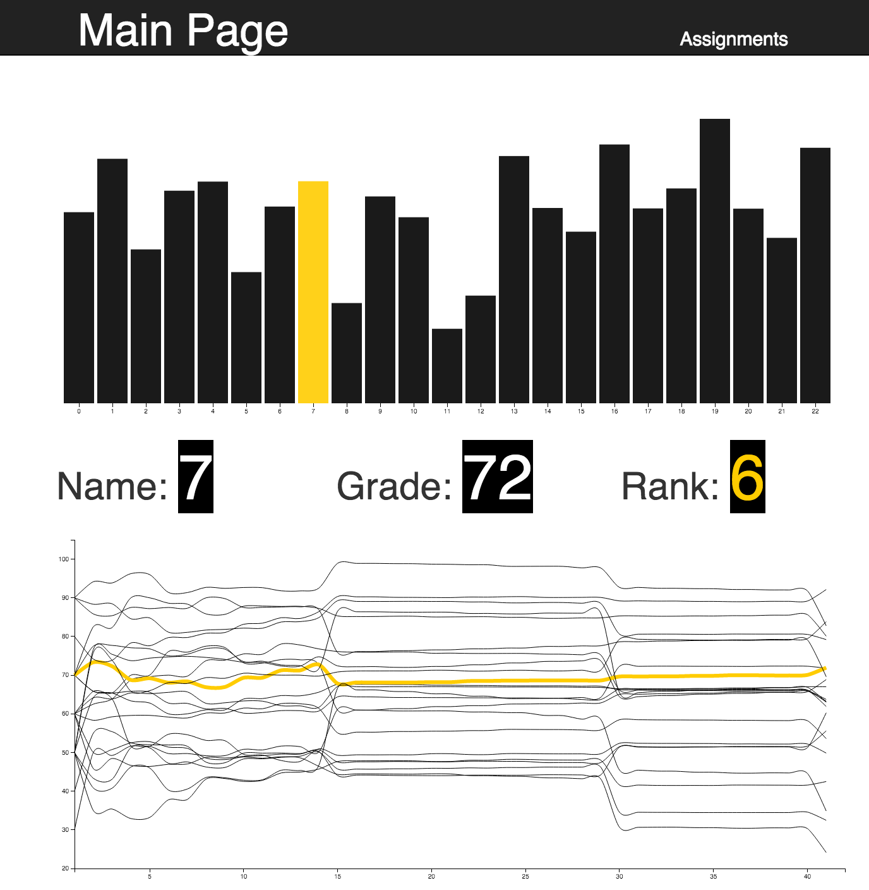
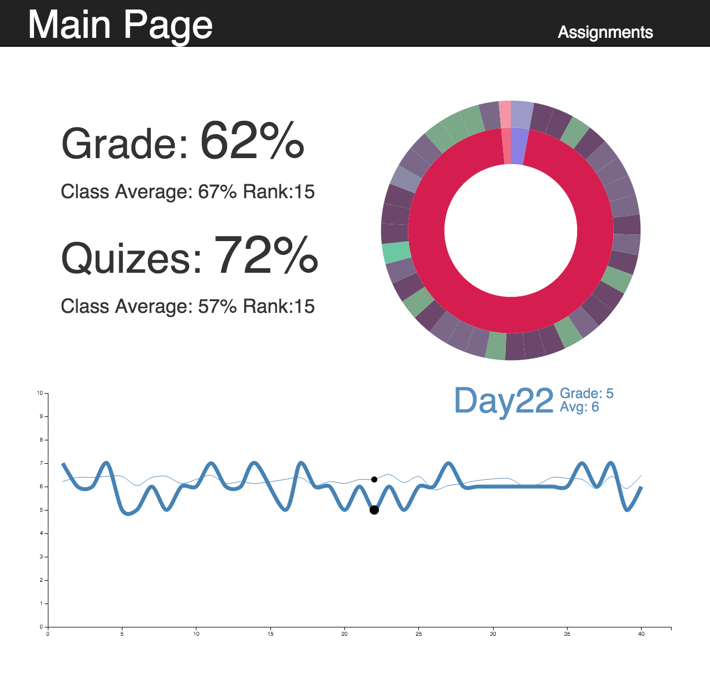
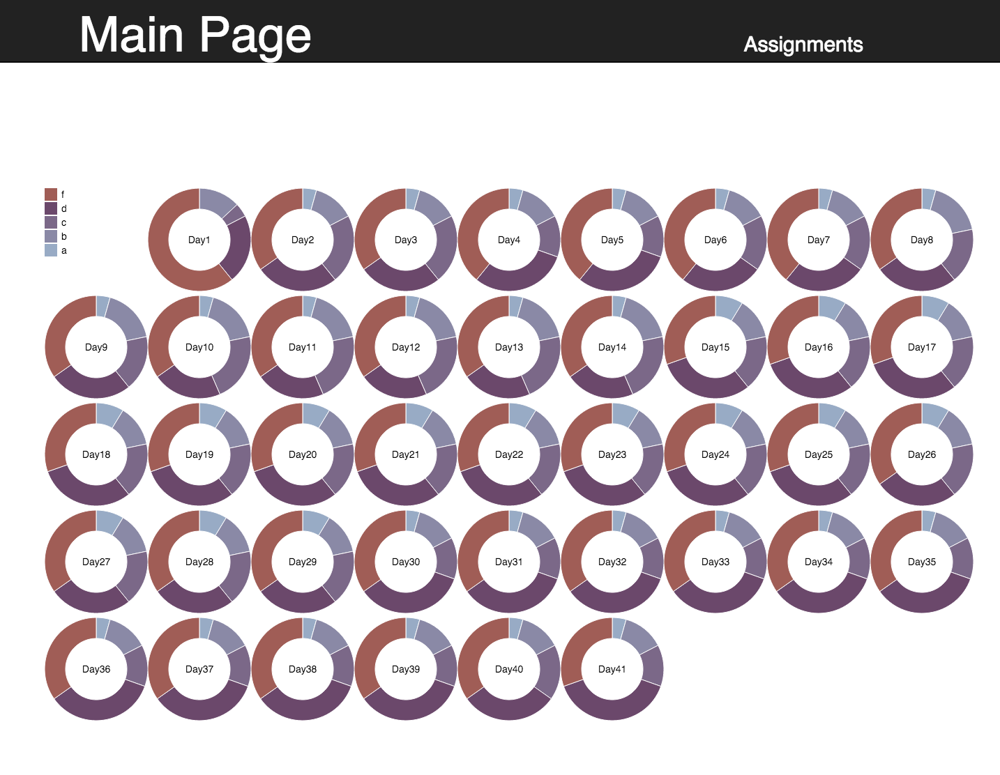

<h2>1. All pages look good on my screen, but you may want to zoom your browser if you are using a low resolution one.</h2>


<h2>2. The sunburst(ring chart) can be clicked and hovered.</h2>
<h2>3. There are interactivities between charts.</h2>

</img>
</img>
</img>
